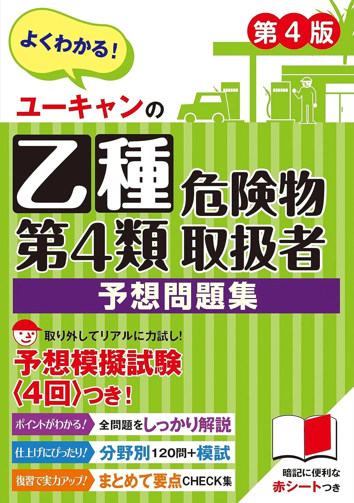
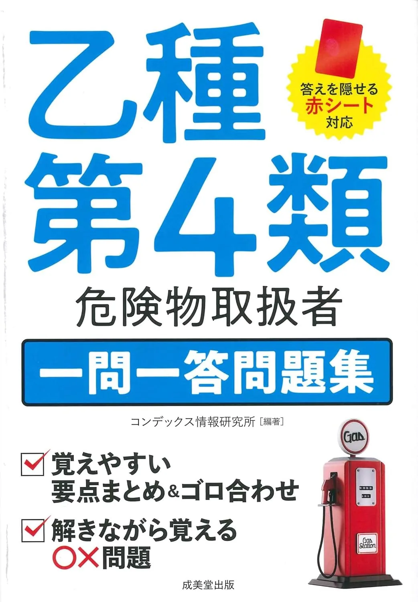
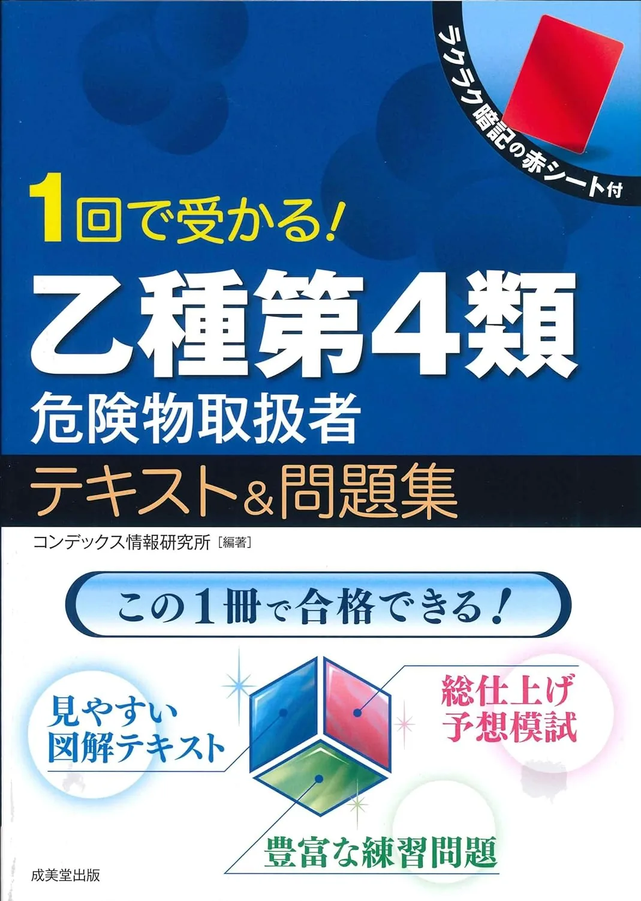

危険物乙4の予想·一問一答3選【ユーキャン·成美堂2026】
予想·一問一答3冊を、直前期の使い方の違いで比較します。筆記は四肢択一·50問·60分·三領域（法令·物性·火災予防）、35/50合格目安·受験手数料5,300円（要項で再確認）です。試験日·出題範囲は消防試験研究センター要項が正本。価格·在庫は購入前に各Amazonページでご確認ください。
この記事の信頼性について
| 執筆 | 乙4マスター編集部（危険物取扱者試験（乙種第4類）の筆記試験に向けた学習設計・演習運用を専門とする編集チーム。法令・物理化学・性質消火の三科目を横断し、受験者が迷わない導線づくりを担当しています。） |
|---|---|
| 確認 | 公式情報確認担当（消防試験研究センター・消防庁の公開情報と照合し、出題傾向とサイト内リンクの整合を確認した担当者です。） |
| 事実確認日 | 2026-06-18 |
| 主な参照元 |
1直前期：予想と一問一答の段階
予想·一問一答はテキスト·問題集で固めた論点を本番時間感覚·短問量で確認するためのものです。メイン教材の代わりにはなりません。
| 段階 | 教材の役割 |
|---|---|
| 1 | テキストで三領域理解 |
| 2 | 問題集で通し·分野別 |
| 3 | 予想で60分·50問 |
| 4 | 一問一答で穴埋め |
例えば7/20（日）——50問通し2回目35/50——8/3（月）予想導入——おすすめ問題集3選問題集完了後——してください。
予想・一問一答3選（比較）
価格は執筆時点（2026-06-04）のAmazon税込参考です。試験日程・出題範囲は消防庁（公式）で必ず確認してください。
| 順位 | 商品名 | 価格（税込参考） | ページ数 | 向いている人 |
|---|---|---|---|---|
| 1 | ユーキャンの乙種第4類危険物取扱者 予想問題集 第4版 | ¥1,540 | 248 | 本試験直前に予想問題で形式慣れをしたい人 |
| 2 | 乙種第4類 危険物取扱者 一問一答問題集 | ¥1,320 | 272 | 一問一答形式で短問演習量を確保したい人 |
| 3 | 1回で受かる! 乙種第4類危険物取扱者 テキスト&問題集 | ¥1,540 | 256 | 短期でテキストと演習を1冊にまとめたい人 |

ユーキャンの乙種第4類危険物取扱者 予想問題集 第4版
- ユーキャン速習レッスンとセットの予想問題集
- 直前期の本試験形式演習向け
- 時間配分の練習に向く

乙種第4類 危険物取扱者 一問一答問題集
- 成美堂の一問一答定番
- テキスト読了後の穴埋め演習に向く
- 本試験型問題集（別記事）との併用例が多い

1回で受かる! 乙種第4類危険物取扱者 テキスト&問題集
- テキスト＆問題集一体型の総仕上げ向け
- 超短期学習・直前総復習に向く
- 他社教材との併用でも役割分担しやすい
23冊の用途：8週前と4週前
2026年度版3冊の用途の違いです。1冊を80％使い切ってから次を検討します。
| 教材 | 主な用途 |
|---|---|
| ユーキャン予想 | 直前本試験形式 |
| 成美堂一問一答 | スキマ短問 |
| 1回で受かる | 短期総仕上げ |
たとえば8/3（月）——ユーキャン予想週1——8/17（月）一問一答10問/日——予算1冊なら予想優先——timed-practice60分計測——してください。
31位 ユーキャン予想：土曜60分×4週
「ユーキャンの乙種第4類危険物取扱者 予想問題集 第4版」（248頁·Amazon税込参考1,540円）は速習レッスンとセットの直前演習向きです。
| 強み | 弱み·注意 |
|---|---|
| 60分·50問計測◎ | テキスト未読では空転 |
| ユーキャン縦串 | 単体では深読み不足 |
| 時間配分練習 | 価格はAmazon要確認 |
例えば8/3（月）——土曜60分50問——翌週月曜誤答領域——法令12/17未満なら+10問——9/1（月）38/50目標——pass-score35/50——してください。
42位 一問一答·3位 1回で受かる
成美堂 乙種第4類一問一答問題集（272頁·1,320円参考）は通勤·昼休みの短問向き。1回で受かる! テキスト&問題集（256頁·1,540円参考）は超短期総仕上げです。
| 教材 | 向く人 |
|---|---|
| 一問一答 | 穴埋め·頻出 |
| 1回で受かる | 再受験·短期 |
| 併用 | 予想+短問 |
たとえば8/17（月）——平日15分×5で10問——3日後誤答5問解き直し——9/8（月）新規短問停止——おすすめテキスト3選未読なら先にテキスト——してください。
5予想・一問一答で避けたい失敗
直前教材だけに頼ると、三領域の土台が浅いまま本番に入ります。
**予想だけで開始** … 計算背景が浅い
**一問一答を無限に** … 60分50問の配分が未経験
**テキスト未完了** … 誤答理由が「わからない」まま
**同時に3冊** … 解き直しが回らない
具体例としてテキストと問題集で35/50前後を確認してから予想・一問一答を1冊追加し、週1回は50問通しで時間配分を見ると直前教材が活きます。
6購入前の確認事項
独学を始める前に、消防庁（公式）で受験資格・試験日程・出題範囲（3分野）・合格基準をメモしてください。
模試・予想問題の選び方の学習計画。
- 公式テキストの章立てと一致させると
- 過去問の分野ラベルとも対応づけやすくなり
ブログやSNSの「最新情報」は、必ず消防庁・消防試験研究センターのページと照合してから採用してください。申込期限や受験料は年度ごとに変わるため、カレンダーに締切を入れてから教材を開く習慣が有効です。
7よくある質問
予想·一問一答だけで合格できますか？
予想と一問一答、両方買いますか？
本記事と時間計測演習記事の違いは？
記事の基本情報
| ジャンル | 過去問活用 |
|---|---|
| タグ | 独学 / 参考書 |
公式情報の確認
公式情報の確認：危険物取扱者試験（乙種第4類）の最新情報は、消防庁（公式）などの公式情報を必ず確認してください。本人に割り当てられた試験会場は受験票の表記が正本です。